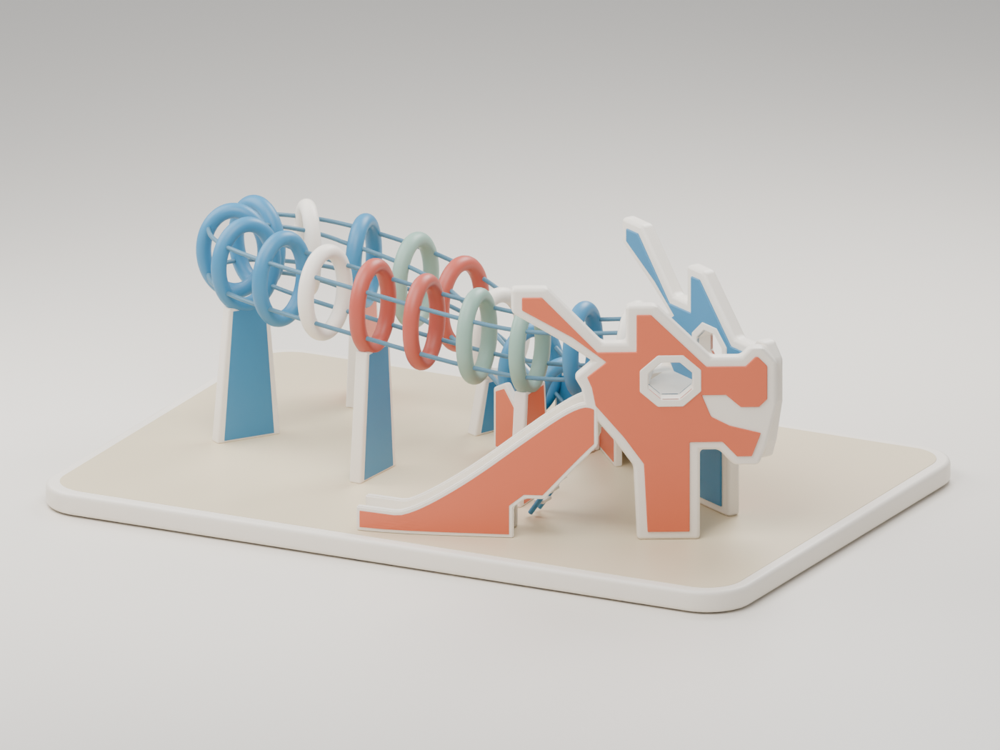

<!doctype html>
<html lang="en"><meta charset="utf-8"><meta name="viewport" content="width=device-width,initial-scale=1">
<title>Dragon · Puffy hoops 06</title>
<style>
*{box-sizing:border-box}body{margin:0;background:#f4f0e8;color:#293d44;font:15px/1.5 system-ui,sans-serif}header{padding:24px 4vw 18px;border-bottom:1px solid #d9d3c8;background:#fffdf8}small{color:#b05032;text-transform:uppercase;letter-spacing:.14em;font-weight:700}h1{font-size:30px;letter-spacing:-.04em;margin:5px 0}header p{color:#687273;margin:4px 0}main{max-width:1550px;margin:auto;padding:24px 4vw;display:grid;grid-template-columns:190px 1fr;gap:24px}nav{display:flex;flex-direction:column;gap:7px}button{font:inherit;cursor:pointer;text-align:left;padding:10px 14px;border:1px solid #d9d3c8;border-radius:7px;background:#fffdf8;color:inherit}button[aria-pressed=true]{background:#31566a;color:white;border-color:#31566a}button:focus-visible{outline:3px solid #da6946;outline-offset:2px}.nav-label{margin:15px 0 2px;font-size:12px;font-weight:700;letter-spacing:.04em;color:#687273}figure{margin:0;min-width:0}figure img{width:100%;max-height:72vh;object-fit:contain;border-radius:10px;background:#dedbd4;display:block}figcaption{padding:14px 2px;font-size:14px;color:#687273}a{color:#31566a;text-underline-offset:3px}footer{max-width:1450px;margin:0 auto;padding:0 4vw 28px;font-size:13px;color:#687273}@media(max-width:750px){main{grid-template-columns:1fr}nav{flex-direction:row;flex-wrap:wrap}.nav-label{flex-basis:100%;margin:6px 0 0}button{padding:6px 10px;font-size:12px}figure img{max-height:none}}
</style>
<header><small>Toa Payoh · Blender model revision</small><h1>Puffy hoops / 06</h1><p>18 complete oval hoops · deeper slide toes · thicker support walls</p></header>
<main><nav aria-label="Review angles and comparisons" id="views"></nav><figure><figcaption id="caption" aria-live="polite"></figcaption></figure></main>
<footer><strong>Editable visual prototype.</strong> The approved concept governs shape and styling; photographs guide the connections. Print parts, joints and slicer validation follow shape review. <a href="../../docs/design-direction.md">Model notes</a> · <a href="../../model/blender/dragon-puffy-hoops-v06.blend" download>Blender file</a> · <a href="../../references/README.md">Photo references</a></footer>
<script>
const views=[
 ['hero.png','Main view','V06 Blender render: deeper, more substantial slide toes and slightly thicker sidewalls, following the cropped photograph.'],
 ['opposite.png','Reverse view','V06 Blender render: both slide bases are fuller at their lower ends; the raised platform connections and upper cutouts remain.'],
 ['top.png','Top / plan','V06 Blender render: the established body route, splayed head platform, two slide branches and separate ladder.'],
 ['side_a.png','Side A','V06 Blender render: the toe now has a deeper solid side profile, blending smoothly into the existing slope.'],
 ['side_b.png','Side B','V06 Blender render: the second slide receives the same deeper toe and modest increase in wall thickness.'],
 ['head_end.png','Head end','V06 Blender render: head-panel spacing, platform and adjoining hoops.'],
 ['return_end.png','Return end','V06 Blender render: 18 closed oval hoops, five body supports and the low tail entrance.'],
 ['junction.png','Head detail','V06 Blender render: the v04 head silhouette and solid cream mouth marking are retained.'],
 ['slide_detail.png','Slide detail','V06 Blender render: a taller orange field at the toe gives the base more substance. The continuous cream border and stepped upper opening remain.'],
 ['../../renders/refinements/sparse-soft-ribs-v2.png','Approved concept','Approved generated concept: the target for full puffy hoops, spacing and soft toy-like proportions. This is a style reference, not a render of the Blender model.'],
];
const nav=document.getElementById('views');
views.forEach(([src,title,caption],index)=>{
 if(index===0||index===9){const label=document.createElement('div');label.className='nav-label';label.textContent=index===0?'V06 model · nine angles':'Compare';nav.append(label)}
 const b=document.createElement('button');b.type='button';b.textContent=title;b.setAttribute('aria-pressed',String(index===0));
 b.onclick=()=>{nav.querySelectorAll('button').forEach(n=>n.setAttribute('aria-pressed','false'));b.setAttribute('aria-pressed','true');document.getElementById('render').src=src;document.getElementById('render').alt='Dragon playground — '+title;document.getElementById('caption').textContent=caption};nav.append(b)
});
document.getElementById('caption').textContent=views[0][2];
</script></html>
